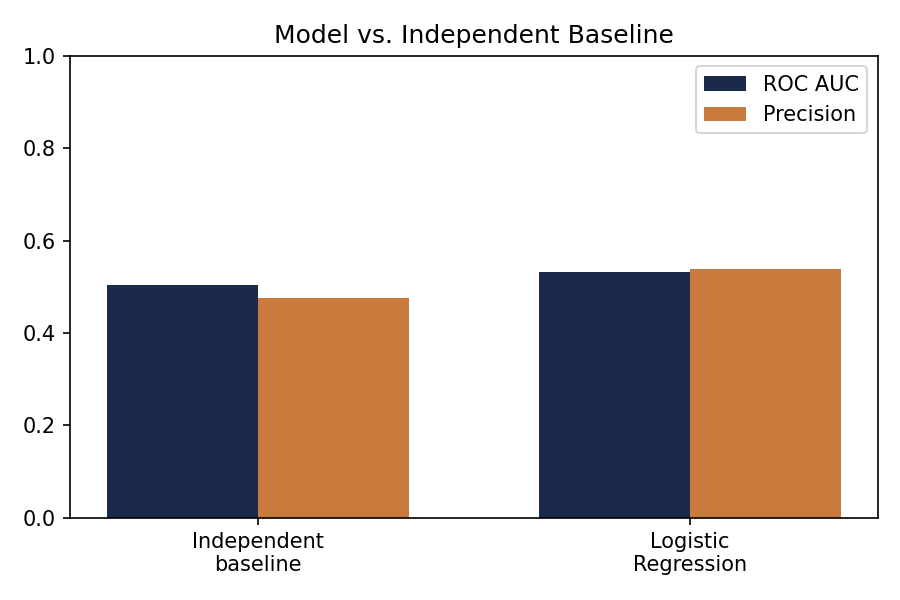
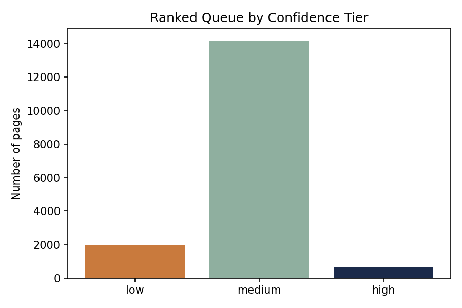

Question: can a simple, validated model identify which content pages are most likely underperforming their click-through rate for their search position — better than a hand-written rule — so a content team knows where to review first?
Method: a Logistic Regression trained on six observable signals (impressions, position, word count, search volume, competition, CPC) from one month of real search performance data, validated on clients held entirely out of training.
Result: the model modestly but genuinely outperforms an independent baseline (0.532 vs. 0.503 ROC AUC) — a real, if unglamorous, result reached only after catching and correcting a circular baseline that had initially, and wrongly, looked far stronger.
The output is a ranked, reason-coded action queue intended for human review, not automated content changes.
The problem this supports
Content teams accumulate more pages than they have time to review. A simple rule can flag candidates, but a fixed threshold can only weigh one or two signals at once, and — unlike a trained model — its performance can't be honestly measured against held-out data in the same way.
This work asks a narrower, checkable question: among pages with real search visibility, which ones show a click-through rate meaningfully below what their position would predict — and can a simple model rank these candidates better than an independent, hand-written rule?
The decision this supports is prioritization, not automation: a ranked shortlist that tells a reviewer where to look first, with a reason attached to every recommendation.
One month, one warehouse release
This analysis uses the FlyRank internship warehouse release (Hugging Face, gated), tables fact_content_daily_performance and dim_content, restricted to a single mid-panel month — March 2026 — chosen specifically to avoid developing label logic inside the dataset's natural final-month test window.
All facts above were confirmed by direct query against the release, not assumed. Two categories of data were deliberately excluded: GA4/engagement signals (available for only ~4% of rows, which would have biased the model toward the small subset of clients with GA4 connected), and any FlyRank product decision fields such as health_score or priority_score — these aren't shipped in the release, and reconstructing one would let a model simply copy an existing rule instead of learning from raw signal.
No client names, domains, raw URLs, or private queries appear anywhere in this study. Every identifier used is a pseudonymous hash, present only for grouping and joins.
Label, features, baseline, split
Label
Binary: 1 if a page's actual March CTR falls below 70% of its position-bucket's expected CTR (itself derived from the same March data), 0 otherwise. This is a same-window snapshot, not a future-outcome prediction — see Limitations.
Features
Six signals, all knowable at the decision point: impressions, average position, word count, search volume, competition, and CPC. A seventh candidate, backlinks, was dropped early after it proved mostly null for this slice — rather than dropping half the dataset's rows to keep it.
Baseline
An independent rule — flag if position > 10 and impressions ≥ 1,000 — built without touching the quantity the label is derived from.
Validation design
Grouped by client (70/30 split), with zero client overlap between train and test confirmed directly. A plain random split was tested for comparison and found to inflate ROC AUC by roughly 0.035 — evidence that client identity carries some signal a model can partially memorize rather than generalize from.
Leakage checks performed
- Confirmed no product-decision fields anywhere in the feature set.
- Tested and excluded
content_updated_dateas a staleness signal after finding values implying post-March updates — using it would have leaked future-state information into a March-dated feature. - Found and corrected a circular baseline comparison (see Results) before reporting any headline number.
Model vs. baseline, on the same held-out split
An early baseline — ranking pages directly by their actual CTR, the same quantity used to build the label — scored 0.996 ROC AUC. That number is not a result. It's circular: it measures how well a value predicts a label built from that same value. Once caught, it was replaced with a baseline built only from position and impression volume — signals independent of the label's construction. The honest baseline scores 0.503 ROC AUC.
| Method | ROC AUC | Precision |
|---|---|---|
| Independent baseline position > 10 AND impressions ≥ 1,000 |
0.503 | 0.475 |
| Logistic Regression grouped split, held-out clients |
0.532 | 0.538 |

On this fair, non-circular comparison, the model outperforms the baseline on both metrics — modestly, not dramatically. This is a weak-to-moderate signal, honestly reported as such.
What this work cannot claim
- Single-month scope. Feature and label windows overlap within March 2026 — this model describes March, it does not predict a future outcome.
- Client history depth unverified. History depth is known to vary widely by client; this analysis used March uniformly across all 55 clients without individually checking each client's tracking start date — a disclosed gap, not a silent assumption.
- Two circularity issues were found mid-analysis, not avoided from the start — a staleness field with post-window values, and the baseline described in Results — both caught and corrected before being reported as findings.
- A small cluster of the ranked queue (under 0.2%) shows saturated, near-certain scores concentrated in one client — flagged for manual review, not presented as the most trustworthy top picks.
- No causal claim is made anywhere in this work. No experiment was run; a title/meta fix improving performance is a hypothesis this data cannot confirm. All results are decision-support, not diagnosis.
The action queue
16,822 held-out pages, ranked by predicted probability of CTR underperformance. Every row carries one reason code and one action label — a starting shortlist for a human reviewer, not an automated fix.
| # | Confidence | Reason code | Action |
|---|---|---|---|
| 1–679 | High | ctr_below_position_expectation | review_title_meta |
| 680–14,862 | Medium | ctr_below_position_expectation | review_title_meta |
| 14,863–16,822 | Low | ctr_below_position_expectation | review_title_meta |

Intended use: a content strategist with limited review time decides which pages to look at first. Never automated: publishing content changes directly from this queue, treating rank position as a certainty of severity, or applying this queue to a client whose data quality hasn't been separately checked.
Rerun or inspect this work
Every step in this paper — the data contract, the baseline, the model, the validation audit, and the action playbook — is a real, executed notebook in the linked repository.